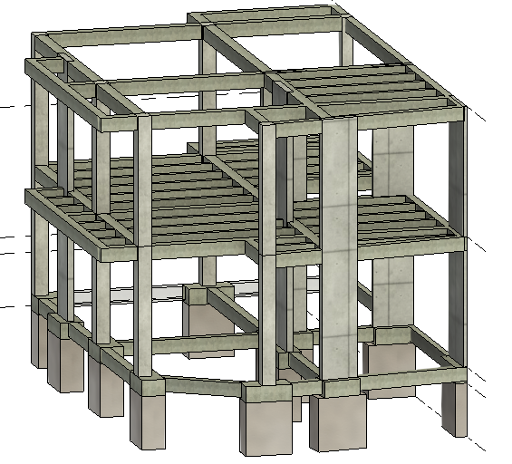

Proyecto residencial premium
Condominio Trinidad | Viviendas unifamiliares de alto valor
Resumen ejecutivo
Condominio Trinidad es un desarrollo residencial orientado a la construcción de viviendas unifamiliares de alto valor económico dentro de un entorno privilegiado en Santander, Colombia. El proyecto contempla más de 50 lotes con potencial de desarrollo, y hasta el momento se han realizado los diseños estructurales de 3 viviendas de 1 y 2 pisos. El reto principal ha sido definir soluciones estructurales seguras, eficientes y compatibles con propuestas arquitectónicas exclusivas, manteniendo un alto estándar técnico y una imagen coherente con el carácter premium del condominio. El enfoque del diseño prioriza la funcionalidad, la constructibilidad y el desempeño sísmico, adaptando cada solución a las condiciones particulares de cada lote y tipología residencial.
Contexto y restricciones
- Uso: Vivienda unifamiliar de alto valor.
- Tipologías: Casas de 1 y 2 pisos.
- Escala del desarrollo: Más de 50 lotes proyectados dentro del condominio.
- Avance actual: 3 diseños estructurales desarrollados a la fecha.
- Condición del proyecto: Integración de soluciones estructurales con arquitectura residencial premium.
- Criterios: Seguridad sísmica, eficiencia espacial, constructibilidad y adaptabilidad por lote.
Solución estructural
La solución estructural para las viviendas del Condominio Trinidad se ha desarrollado mediante sistemas en concreto reforzado, concebidos para responder de forma segura a cargas gravitacionales y sísmicas bajo la normativa colombiana. Cada diseño ha requerido una adaptación particular según la configuración arquitectónica, el número de niveles y las características del lote, manteniendo una lógica estructural ordenada y eficiente. El enfoque adoptado permite resolver viviendas con altos requerimientos espaciales y arquitectónicos sin comprometer estabilidad, servicio ni viabilidad constructiva. Esto facilita además la consolidación progresiva de una línea de diseño replicable para futuras viviendas dentro del mismo desarrollo.
Datos técnicos del proyecto
- Nombre del proyecto: Condominio Trinidad
- Tipo: Desarrollo residencial unifamiliar
- Ubicación: Santander, Colombia
- Tipologías desarrolladas: Viviendas de 1 y 2 pisos
- Escala prevista: Más de 50 lotes
- Diseños realizados: 3 viviendas a la fecha
- Material estructural principal: Concreto reforzado
- Enfoque principal: Vivienda premium con desempeño estructural y adaptabilidad por lote
- Normativa: NSR-10
Enfoque de desempeño estructural
El desarrollo estructural de estas viviendas se orienta al control adecuado de cargas verticales, estabilidad global y respuesta sísmica acorde con el contexto colombiano. En cada caso se revisa la compatibilidad entre arquitectura y estructura para lograr distribuciones eficientes de vigas, columnas, losas y elementos de soporte, evitando interferencias con los espacios principales de la vivienda. Al tratarse de casas de alto valor, el diseño también busca una solución racional desde el punto de vista constructivo, manteniendo altos estándares técnicos y una adecuada proyección para futuras etapas del condominio.
Entregables
- Diseño estructural de viviendas unifamiliares
- Modelos analíticos de cada solución desarrollada
- Planos estructurales para construcción
- Documentación técnica de coordinación con arquitectura
- Criterios base para escalabilidad del desarrollo en futuros lotes